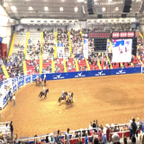

|
I am a final-year PhD candidate at the Laboratory of Image and Video Engineering (LIVE), UT Austin, advised by Prof. Alan C. Bovik (IEEE/NAI Fellow, Primetime Emmy Award). My research focuses on Theoretical Foundations of Generative Models—Rectified Flows, Diffusion, and MLLMs—with applications in efficient sampling, perceptual quality assessment, and inverse problems. Previously, I was a Student Researcher at Google Research - LUMA Team (Jun–Oct 2025). I currently serve as Assistant Director at LIVE, UT Austin. My PhD research is conducted in collaboration with YouTube/Google Media Algorithms. Prior to my PhD, I worked as Research Engineer-AI at Arkray, Inc. (Kyoto) and ML Engineer at BioMind AI (Singapore), developing AI solutions for medical imaging. I received my B.Tech in Electrical Engineering from IIT Jodhpur, with research mentorship from Prof. Mengling Feng (NUS), Prof. Aditya Nigam (IIT Mandi), and Prof. Anil K. Tiwari (IIT Jodhpur). |

|
🧪 The Diffusion Lab
Technical deep-dives on generative models, diffusion theory, and cutting-edge AI research. Explore →
|
Latest Updates Jan 2026 📢 Open to full-time Research Scientist roles starting 2026!
Jan 2026 Serving as reviewer for ICML 2026 and ECCV 2026
Oct 2025 Completed Student Researcher position at Google Research - LUMA Team
Sept 2025 Rectified CFG++ accepted to NeurIPS 2025!
Jun 2025 Joined Google Research as Student Researcher in LUMA team
May 2025 CHUG paper accepted at IEEE ICIP 2025
May 2025 LGDM paper accepted at ICML 2025!
Mar 2025 Appointed Assistant Director of LIVE at UT Austin
Jun 2024 Joined Amazon as Applied Scientist-II Intern
Jan 2024 Joined Alibaba US as Research Intern
Nov 2023 Paper accepted at WACV 2024 Workshop
Aug 2022 Started PhD at LIVE, UT Austin
|
|
Research Publications |
Discrete Diffusion

|
S Saini, A Saha, B Adsumilli, N Birkbeck, Y Wang, AC Bovik Under Review — ICML 2026 We introduce TABES, a novel trajectory-aware entropy steering mechanism for masked diffusion models that improves token prediction through adaptive backward sampling guided by information-theoretic principles. |
Continuous Diffusion
|  |
S Saini, H Gedik, N Birkbeck, Y Wang, B Adsumilli, AC Bovik Under Review — CVPR 2026 LumaFlux introduces physically-guided diffusion transformers for inverse tone mapping, lifting standard 8-bit content to HDR with physically accurate luminance expansion and color reproduction. |

|
S Saini, S Gupta, AC Bovik NeurIPS 2025 Rectified CFG++ enhances conditional generation with Rectified Flow models through adaptive latent trajectory correction, improving visual coherence and prompt alignment. |

|
S Saini, R Liao, Y Ye, AC Bovik ICML 2025 Exploiting diffusion model priors for perceptually-consistent image quality assessment, achieving better alignment with human perception. |
Multimodal Large Language Models

|
S Saini, B Chen, N Birkbeck, B Adsumilli, AC Bovik Under Review — CVPR 2026 Comprehensive framework for HDR-UGC video quality assessment combining large-scale subjective study with HDR-native multimodal reasoning. |
Video Quality Assessment

|
S Saini, B Chen, N Birkbeck, Y Wang, B Adsumilli, AC Bovik WACV 2026 No-reference quality assessment framework for UGC HDR videos addressing luminance adaptation and dynamic range artifacts. |

|
S Saini, A Saha, AC Bovik WACV 2024 Deep contrastive representation learning for HDR video quality assessment with state-of-the-art prediction performance. |
Datasets & Benchmarks

|
S Saini, N Birkbeck, Y Wang, B Adsumilli, AC Bovik IEEE ICIP 2025 Large-scale crowdsourced dataset for HDR video quality with diverse real-world content. |

|
S Saini, P Korus, S Jin Amazon Internal Preprint Standardized benchmark for evaluating diffusion-based image and video editing in real-world scenarios. |
|
Experience
|
|
Professional Service
Conference Reviewer: NeurIPS, ICLR, ICML, CVPR, ECCV, WACV (2025–2026) |
|
Other Projects |

|
S Saini, Y Chen, KS Durbha |

|
S Saini, KS Durbha |

|
S Saini, KS Durbha |
|
Earlier Publications (Medical AI) |

|
S Saini, G Agrawal IEEE ISBI 2021, IEEE ICHI 2021 |

|
S Saini, YS Jeon, M Feng ACM CHIL 2021 |
|
|
RR Jha, G Jaswal, S Saini, D Gupta, A Nigam IET Biometrics 2019 |

© 2026 Shreshth Saini |